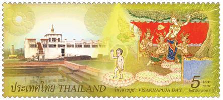
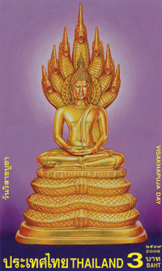

|
วันวิสาขบูชา |
|
ความหมาย.- วันวิสาขบูชาเป็นวันสำคัญวันเดียวที่รู้กันทั่วโลกพระพุทธศาสนา ทางประเทศศรีลังกาเรียกว่าวันธรรมจักร ที่เมืองไทยเข้าใจว่ามีมาพร้อมกับพระพุทธศาสนาเข้ามานั้นแล ตามหลักฐาน จดหมายเหตุนางนพมาศ ก็เล่าว่ามีการเฉลิมฉลองวันวิสาขบูชาตั้งแต่สมัยสุโขทัย ถึงปลายสมัยกรุงศรีอยุธยา การทำพิธีวันวิสาขบูชาได้ยกเลิกไป มาฟื้นฟูขึ้นใหม่ในสมัยพระบาทสมเด็จพระพุทธเลิศหล้านภาลัย รัชกาลที่ 2 แห่งกรุงรัตนโกสินทร์ ตราบเท่าทุกวันนี้ ส่วน วันมาฆบูชา พระบาทสมเด็จพระจอมเกล้าเจ้าอยู่หัว รัชกาลที่ 4 ได้ทรงกำหนดขึ้น วันอาสาฬหบูชา ก็เพิ่งเกิดขึ้นในรัชกาลปัจจุบันนี้เอง เมื่อปี พ.ศ. 2501 นับเป็นวัน น้องใหม่ ทั้งวันมาฆบูชา และวันอาสาฬหบูชา ไม่เป็นที่รู้กันแพร่หลายนักในหมู่ชาวพุทธประเทศอื่น เรียกได้ว่าไม่สากล เฉพาะวันวิสาขบูชาเท่านั้นที่รู้กันแพร่หลาย ชาวพุทธทั่วโลกได้ทำการบูชาในวันนี้เพื่อรำลึกถึงพระพุทธคุณ มีเรื่องที่น่ายินดีอย่างหนึ่งก็คือ การสื่อสารแห่งประเทศไทย ได้ออกแสตมป์ชุดวันวิสาขบูชาและวันสำคัญทางพระพุทธศาสนาติดต่อกันมาหลายปีแล้ว ซึ่งก่อนหน้านี้ไม่เคยมีแสตมป์เช่นนี้เลย เครดิตนี้ต้องยกให้การสื่อสารแห่งประเทศไทย ที่เห็นคุณค่าและความสำคัญของวันสำคัญทางพระพุทธศาสนา และเหนืออื่นใด ต้องขอขอบคุณท่านอาจารย์ชัชวาล ปุญปัน อาจารย์พรศิลป์ รัตนชูเดช ที่ช่วยผลักดันจนเกิดผลสัมฤทธิ์นี้ขึ้นมาได้ (ผมต้องเล่าเรื่องนี้ซ้ำแล้วซ้ำอีก เพื่อขอบคุณอาจารย์ทั้งสอง และการสื่อสารแห่งประเทศไทย ที่ผลักดันให้เรื่องนี้สำเร็จ)  วันวิสาขบูชาได้รับการยอมรับว่าเป็นวันสำคัญของโลกด้วย แสดงให้เห็นว่าวันวิสาขบูชามิใช่สำคัญเฉพาะในหมู่ชาวพุทธเท่านั้น หากมีความสำคัญสำหรับมนุษยชาติทั่วโลกด้วย พระพุทธเจ้าทรงเป็นบุคคลสำคัญที่มีความหมายต่อชาวโลกทั้งปวง การตรัสรู้ของพระองค์นำมาซึ่งสันติสุขแก่ชาวโลกทั้งปวงอย่างแท้จริง เราชาวพุทธน่าจะภาคภูมิใจในเกียรติภูมิครั้งนี้  ทราบไหมครับว่า ในขณะที่พวกเราชาวพุทธมีของดี มีของล้ำค่าอย่างพระพุทธศาสนา พวกเราส่วนมากก็ไม่รู้สึกตื่นเต้น ภาคภูมิใจอะไร กลับไปให้ความสำคัญแก่สิ่งอื่นซึ่งไร้แก่นสารมากกว่า ไม่ต่างอะไรกับ ไก่ได้พลอย หรือ ลิงได้แก้ว
ผมได้รู้จักกับฝรั่งหนุ่มคนหนึ่ง เขามาหาผมด้วยท่าทางกระตือรือร้น นำหนังสือมาให้เล่มหนึ่ง เป็นผลงานการถ่ายภาพของเขา ขณะที่ตระเวนไปทั่วประเทศไทย เขาเล่าว่า เขาไม่รู้จักพระพุทธศาสนา ไม่รู้จักว่าชาวพุทธเขานับถืออะไร ปฏิบัติอย่างไร เข้ามาประเทศไทยในฐานะนักท่องเที่ยว ขณะนั่งรถผ่านไปตามจังหวัดต่างๆ ผ่านสถานที่หลายแห่งที่มีพระพุทธรูปองค์ใหญ่ๆ ประดิษฐานตามเชิงเขาบ้าง บนพื้นที่ราบบ้าง ในวัดบ้าง รู้สึกประทับใจว่าใบหน้าของพระผู้เป็นเจ้าของรูปปั้นนั้นมันช่างสงบเย็น มีพลังกระตุ้นจิตใจเขาให้ตื่นจาก ความหลับ ได้อย่างประหลาด ตั้งแต่นั้นมาเขาก็ตัดสินใจไปดูทุกแห่งที่มีพระพุทธรูป ดู โลเกชั่น รอวัน รอเวลา และองค์ประกอบอื่นๆ ที่เหมาะสม แล้วก็เก็บภาพเหล่านั้นไว้ ตั้งใจว่าเก็บได้เพียงพอแล้วก็จะพิมพ์ออกมาเป็นเล่ม และเขาก็ได้ทำสำเร็จตามเป้าหมายแล้ว เขาเล่าว่า หนังสือเล่มนี้มิใช่สมุดรวมภาพพระพุทธเจ้าเฉยๆ หากเป็น เครื่องเตือนสติ ให้รำลึกถึงความบริสุทธิ์ ความสงบ แห่งองค์พระสัมมาสัมพุทธเจ้าด้วย สำหรับตัวเขาเองนั้น เขาเล่าว่า เขาได้สัมผัสกับความสะอาด สว่าง สงบ อย่างไม่เคยได้รับที่ไหนมาก่อนเลย ผ่านการจ้องมองพระพักตร์ของพระพุทธเจ้า เพียงแค่จ้องพระพักตร์พระพุทธเจ้า เขายังได้ปรัชญาชีวิต ได้สัมผัสกับมิติที่ล้ำลึกแห่งชีวิตปานฉะนี้ ถ้าหากเขาได้มีโอกาสเรียนรู้และปฏิบัติตามคำสอนของพระพุทธองค์ เขาจะได้รับอานิสงส์อย่างมหาศาลเพียงใด เด็กหนุ่มคนนี้บอกผมอย่างนี้ ก่อนจากกันเขาเล่าว่า
วันหนึ่งเขาตั้งกล้องแล้ว นั่งรอให้พระอาทิตย์คล้อยต่ำ เพื่อเอาแสงยามพระอาทิตย์อัสดง
พระภิกษุรูปหนึ่ง ซึ่งมองเขาด้วยความสงสัยมาแต่ต้น ทำนองว่า ไอ้หมอนี่มันทำอะไรของมัน
จะถ่ายรูป ทำไมไม่รีบๆ ถ่ายเสียให้เสร็จ จับนั่น จับนี่ มองนั่นมองนี่อยู่เป็นชั่วโมงๆ
จึงเข้ามาถามว่า คุณรออะไร รอแสงสว่าง เขาตอบ คือรอให้แสงพระอาทิตย์ได้ที่เสียก่อน แสงสว่างอยู่ในใจของคุณแล้วมิใช่หรือ พระรูปนั้นกล่าวเป็นปริศนา เขาว่า เท่านั้นแหละครับ เขาได้คิดขึ้นมาทันที และคิดไกลไปว่าเพียงแค่รอเวลาจะถ่ายพระพุทธรูปเท่านั้น ยังมีแง่มุม มีเงื่อนไข ให้เกิดความรู้ ความเข้าใจ อะไรได้ขนาดนี้ หากได้มองดูพระพักตร์และองค์ของพระพุทธที่สง่างาม ในพระอิริยาบถต่างๆ อาจเป็น สื่อ ให้บุคคลนั้นๆ ได้สัมผัสกับความรู้ และความสงบภายในอันล้ำลึกเป็นแน่แท้ เขาจึงมีฉันทะที่จะพิมพ์หนังสือเล่มนั้นขึ้นมาใหม่ดัดแปลงรูปแบบให้สะดวกแก่การพกพา และน่าจับต้องมากขึ้น เขากล่าวทิ้งท้ายว่า เพียงดูพระพุทธรูปอันเป็นรูปภายนอก เขายังได้ประโยชน์มากเพียงนี้ ถ้าได้นำเอาคำสอนของพระพุทธเจ้าไปปฏิบัติจะได้รับประโยชน์มากเพียงใด กาลข้างหน้าเขาว่าเขาจะมุ่งหน้าแสวงความสงบแห่งจิตใจให้ล้ำลึกกว่านี้ เชื่อได้เลยว่า ไม่ช้าไม่นาน วงการพระพุทธศาสนาก็คงได้พระภิกษุหนุ่มจากอัสดงคตประเทศเพิ่มขึ้นอีกรูปหนึ่ง เหตุการณ์นี้หลายปีมาแล้ว ป่านนี้เขาผู้นั้นอาจกลายเป็นพระภิกษุไปแล้ว หรืออย่างไร ไม่ได้ติดต่อกันเลย ผมขอนำคำสรรเสริญพระพุทธเจ้า และพระพุทธศาสนา ที่ออกจากปากของนักปราชญ์สำคัญระดับโลกมาให้อ่าน เพื่อเฉลิมศรัทธาปสาทะในพระพุทธองค์และพระพุทธศาสนาดังนี้ครับ พระพุทธศาสนาเป็นศาสนาสากลจักรวาล ศาสนาในอนาคต จะเป็นศาสนาสากลจักรวาล ซึ่งข้ามพ้นเรื่องพระเจ้าที่มีตัวตน และไม่มีเรื่องความเชื่อคำสั่งสอนแบบฝังหัว และเทววิทยา ศาสนานั้นครอบคลุมเรื่อง ธรรมชาติและเรื่องจิตวิญญาณ ตั้งอยู่บนฐานความรู้สึกทางศาสนา ที่เกิดจากประสบการณ์แห่งสรรพสิ่ง ทั้งเรื่องธรรมชาติ และจิตวิญญาณ ซึ่งเป็นเอกภาพรวมอย่างมีความหมาย พระพุทธศาสนาสามารถตอบสนอง สิ่งที่พรรณนามานี้....ถ้าจะมีศาสนาใดที่เข้ากันได้กับความต้องการทางวิทยาศาสตร์ ศาสนานั้น ก็คือพระพุทธศาสนา (อัลเบิร์ต ไอสไตน์ ยอดนักวิทยาศาสตร์สมัยใหม่) ไม่มีศาสนาใดเหนือกว่าพระพุทธศาสนา ไม่ว่าจะเป็นพระพุทธศาสนา หรือมิใช่พระพุทธศาสนา ข้าพเจ้าตรวจสอบระบบศาสนาใหญ่ๆ แห่งโลกทั้งหมด ในระบบศาสนาโลกดังกล่าวทั้งหมดนั้น ข้าพเจ้าไม่พบคำสอนของศาสนาใด จะล้ำเลิศกว่าอริยมรรคมีองค์แปด และอริยสัจสี่ ของพระพุทธเจ้าเลย ไม่ว่าในแง่ความงดงาม และความสมบูรณ์ครบถ้วน ดังนั้น ข้าพเจ้าจึงพึงพอใจที่จะประคับประคองชีวิตของตนไปตามนั้น (ศาสตราจารย์รีส เดวิดส์ ผู้ก่อตั้ง-นายกสมาคมบาลีปกรณ์) พระพุทธศาสนาทำสิ่งที่วิทยาศาสตร์ทำไม่ได้ พระพุทธศาสนาเป็นการผสมผสานกันเข้าระหว่างปรัชญาแบบการคาดการณ์
และปรัชญาแบบวิทยาศาสตร์ พระพุทธศาสนาสนับสนุนวิธีการทางวิทยาศาสตร์
และดำเนินตามวิธีนั้นไปสู่เป้าหมายสุดท้าย ซึ่งอาจจะเรียกว่าวิธีการแบบเหตุผล
(เบอร์ทรันด์ รัสเซลล์ ยอดนักปรัชญาอังกฤษยุคปัจจุบัน) จิตวิญญาณแห่งเหตุผล เมื่ออ่านพระสูตรเทศนาของพระพุทธเจ้าแล้ว
พวกเราจะรู้สึกประทับใจ ด้วยจิตวิญญาณแห่งเหตุผล มรรควิธีของพระพุทธองค์
เริ่มต้นด้วยสัมมาทิฐิ ทรรศนะตามหลักเหตุผลเป็นข้อแรก พระพุทธเจ้านั้น
ทรงพากเพียรกำจัดธุลีมลทิน (ดร.เอส. ราธะกฤษณัน)
อ้า
องค์พระบรมโพธิสัตว์ ปฏิบัติสายกลางอันยิ่งใหญ่ ข้อมูลที่ควรอ่านเพิ่มเติมเพื่อความสมบูรณ์ของข้อมูล
|
|
ไป Web สำนักงานเจ้าคณะภาค ๑๖ ไป Web ศูนย์ฝึกอบรมคอมพิวเตอร์วัดท่าไทร |